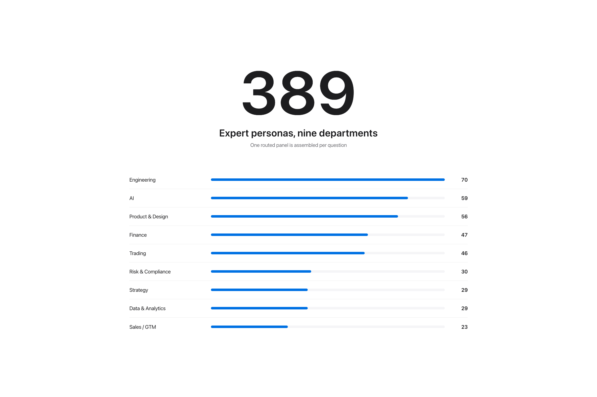
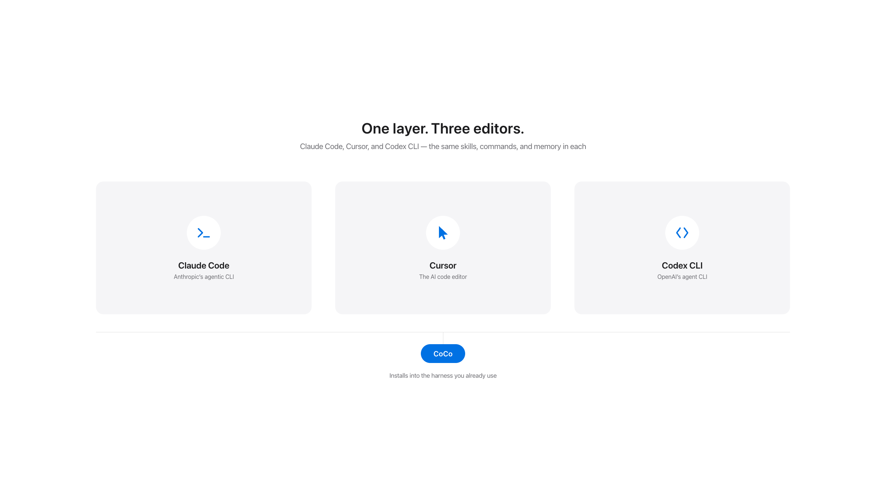
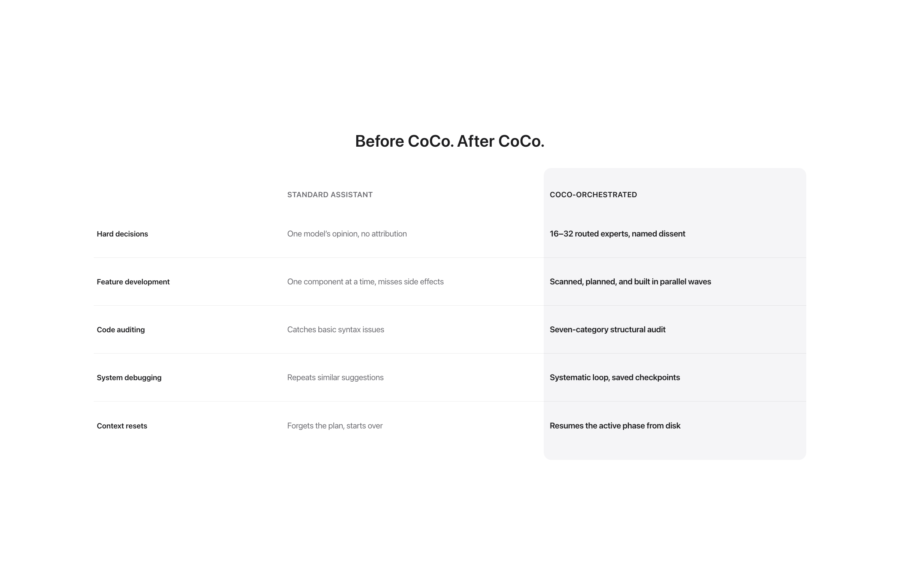

CoCo 1.2.0 · the CoCo Research flagship
Each of the 389 requires a live, checkable source. Then 184 skills ship what they decided.
100% local. No telemetry.
Ask a hard question and CoCo convenes the experts who actually disagree about it. They argue in rounds, positions move, and dissent is recorded by name rather than averaged away. You get the reasoning, the split, and who held which line.

389
Expert personas
Each requires a live, checkable source link. Quotes are illustrative reconstructions, not verbatim; see the disclaimer.
9
Departments
Engineering, AI, product and design, finance, trading, risk and compliance, strategy, data, sales and go-to-market.
279
Commands
37 core, plus 242 generated locally at install from the team registries.
34
Agents
Specialists that carry the decision into code, review it, and verify the result.
Not prompt snippets. Every skill carries state management, verification logic and error handling, so the work survives being handed between sessions and between tools.
Orchestrate
A four-layer role pipeline behind /team: research, execute, review, synthesize. It ships with the core install; there is nothing to enable.
Remember
Six skills that keep durable project knowledge, so context outlives the session it was learned in.
Travel
Claude Code, Cursor, and Codex, from one install. The adapter changes; the skills do not.

Nothing here is hypothetical. Every row is a real workflow, compared with and without a routed panel and a build pipeline behind it.

One command. It clones, shows you the exact commit you're about to run, and waits for you to say yes. Runs on the model and editor you already have: Claude Code, Cursor, or Codex. Your keys never leave your machine.
Step one
bash <(curl -fsSL https://raw.githubusercontent.com/coco-research/coco/main/bin/coco-bootstrap.sh)Step two
CoCo prints the hash, date and message, then pauses. Nothing executes until you approve it.
Step three
/SI-Decide "should we migrate to Postgres?"| Version | 1.2.0 |
|---|---|
| Skills | 184 with all bundles installed. 69 core, plus 68 GSD, 20 HyperFrames, 9 Super Intelligence, 6 Brain, 5 Cursor, 4 M0 and 3 Cognee. |
| Commands | 279. 37 core, plus 242 generated locally at install. |
| Agents | 34. 10 core, plus 24 in the GSD bundle. |
| Personas | 389 across 9 departments, each behind an evidence-validation gate. |
| Editors | Claude Code, Cursor, Codex, and any AGENTS.md-compatible tool. |
| Execution | Entirely local. No telemetry, and no command files transmitted or stored remotely. |
| Install | Roughly 90 seconds, with a fail-closed commit confirmation before anything runs. |
| Bundles | 6 opt-in system bundles: GSD (68 skills, 24 agents), HyperFrames (20 skills), Super Intelligence (9 skills), Brain (6 skills), M0 (4 skills), and Cognee (3 skills). Enabled with --systems. |
| Licence | Open core. MIT core, with the Super Intelligence system licensed separately and kept proprietary. |